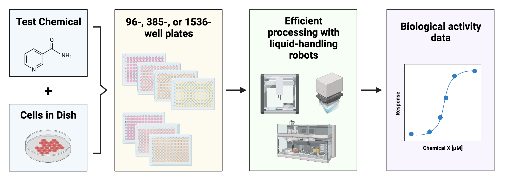
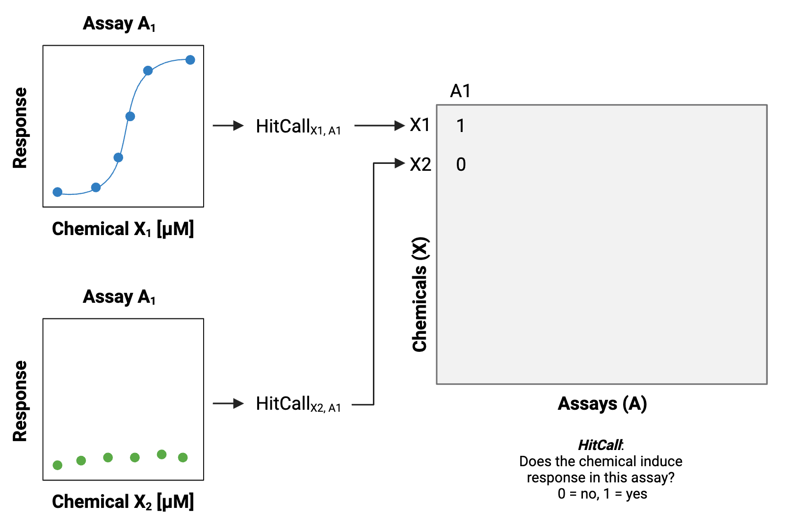
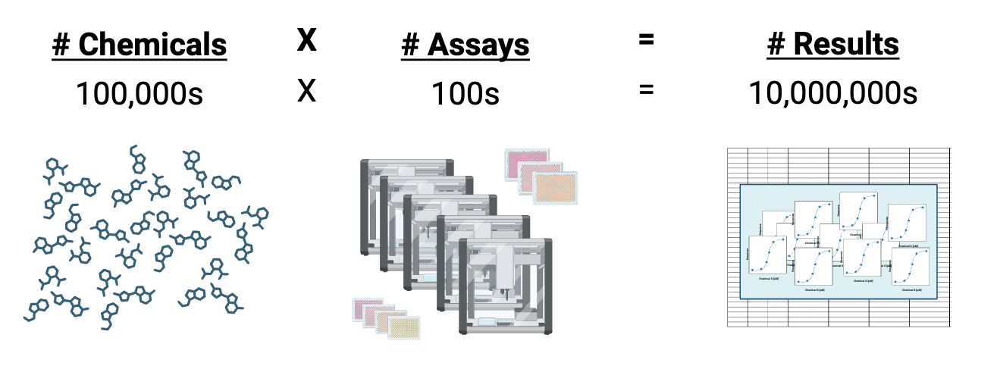
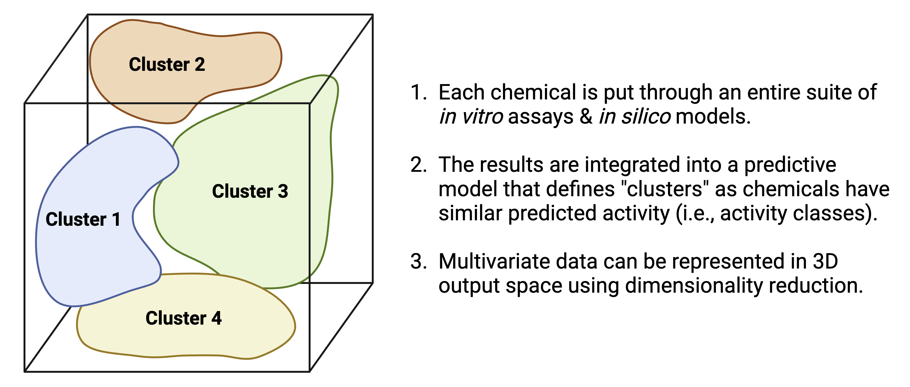

5.1 Introduction to Artificial Intelligence, Machine Learning, and Predictive Modeling for Environmental Health
This training module was developed by David M. Reif, with contributions from Elise Hickman, Alexis Payton, and Julia E. Rager
All input files (script, data, and figures) can be downloaded from the UNC-SRP TAME2 GitHub website.
Introduction to Training Module
Artificial intelligence (AI), machine learning (ML), and predictive modeling are becoming increasingly popular buzzwords both in the public domain and within research fields, including environmental health. Within environmental health, these computational techniques are implemented to integrate large, high dimensional datasets (e.g., chemical, biological, clinical/medical, model estimates, etc) to better understand links between environmental exposures and biological responses.
In this training module, we will:
- Provide general historical context and taxonomy of modern AI/ML
- Provide an overview of the intersection between environmental health science ML through discussing…
- Why there is a need for ML in environmental health science
- The differences between ML and traditional statistical methods
- Predictive modeling in the context of environmental health science
- Additional applications of ML in environmental health science
General Historical Context and Taxonomy of Modern AI/ML
Before diving in to the applications of AI and ML in environmental health, let’s first establish what these term mean and how they are related. Note that the definitions surrounding AI and ML can be subjective, however the purpose of this module is not to get caught up in semantics, but to broadly understand how AI and ML can be applied to environmental health research.
Artificial Intelligence (AI) encompasses computer systems that perform tasks typically associated with human cognition and intelligence. AI is found in our everyday lives, for instance, within face recognition, internet search queries, email spam detection, smart home devices, auto-navigation, and digital assistants.
Machine Learning (ML) can be thought of as a subset of AI and describes a computer system that iteratively learns and improves from that experience autonomously.
Below is a high level taxonomy of AI. It’s not meant to be an exhaustive depiction of all AI techniques but a simple visualization of how some of these methodologies are nested within each other. Note: AI can be categorized in different ways and may deviate from what is illustrated below.

Advantages of AI and ML include the automation of repetitive tasks, complex problem solving, and reducing human error. However, disadvantages include learning from biased datasets or patterns that are reflected in the decisions of AI/ML and the potential limited interpretability of algorithms created by AI/ML. Check out the following resources for…
- Further explanation on differences in Artificial Intelligence vs. Machine Learning
- Other subsets of AI that fall outside of the scope of these modules in Types of Artificial Intelligence
- Additional discussion on the utility of ML approaches for high-dimensional data common in environmental health research in Payton et. al
It is important to understand the methodological “roots” of current methods. Otherwise, it seems like every approach is novel! AI and ML methods have been around since the mid- to late- 1900s and continue to evolve in the present day. The earliest conceptual roots for these approaches can be traced from antiquity; however, it is generally thought that the field was named “artificial intelligence” at the “Dartmouth Workshop” in 1956, led by John McCarthy and others. The following schematic demonstrates the general taxonomy (categories, sub-fields, and specific methods) of modern AI and ML:

A Brief Detour to Discuss ChatGPT
ChatGPT (Chat Generative Pre-trained Transformer) is a publicly available chatbot developed by OpenAI. It was released in November of 2022 and quickly gained popularity due to its accessibility and ability to have human-like conversations with the user across almost any imaginable topic.
Language Models (LLMs), including large language models like GPT-3 (a predecessor to ChatGPT), generally fall under the “Connectionist AI” category, which use deep learning techniques and are considered a subset of artificial neural networks. They fall under the deep learning subset due to their use of deep neural networks with many layers, allowing them to learn from large amounts of data and find intricate patterns.
LLMs are trained to predict the probability of a word given its context in a dataset (a form of next-word prediction), which is a machine learning methodology. It’s notable that they use architectures like Transformer Networks, which are known for their efficiency in handling sequential data, making them a go-to choice for natural language processing (NLP) tasks. The use of attention mechanisms in these architectures allows the model to focus on different parts of the input sequence when producing an output sequence, offering a substantial improvement in performance for many natural language processing tasks.
The role of ChatGPT and similar tools in the environmental health research space is still being explored. Although ChatGPT has the potential to streamline certain parts of the research process, such as text and language polishing, synthesizing existing information, and suggesting custom coding solutions, it is not an intellectual replacement for the expertise and diverse viewpoints of scientists and must be used transparently and with caution.
Application of Machine Learning in Environmental Health Science
For the rest of this module and chapter, we will focus on machine learning (ML). Generally speaking, ML is considered to encompass the study of computer algorithms that can improve automatically through experience and by the use of data. It is seen as a part of artificial intelligence (AI), discussed broadly above.
Why do we need machine learning in environmental health science?
There are many avenues to incorporate ML into environmental health research, all aimed at better identifying patterns amongst large datasets spanning medical health records, clinical data, exposure monitoring data, chemistry profiles, and the rapidly expanding realm of biological response data including multiple -omics endpoints.
One well-known problem that can be better addressed by incorporating ML is the ‘too many chemicals, too little data’ problem. To detail, there are thousands of chemicals in commerce today. Testing these chemicals one by one for toxicity using comprehensive animal screening experiments would take decades and is not feasible financially. Current efforts to address this problem include using cell-based high throughput screening to efficiently determine biological responses to a variety of chemical exposures and treatment conditions.

These screening efforts result in increasing amounts of data, which can be gathered to start building big databases. 
When many of these datasets and databases are combined, including diversity across different types of screening platforms, technologies, cell types, species, and other experimental variables, the associated dimensionality of the data gets “big.” 
This presents a problem because these data are diverse and high dimensional (the number of features or endpoints exceeds the number of observations/chemicals). To appropriately analyze and model these data, new approaches beyond traditional statistical methods are needed.
Machine Learning vs. Traditional Statistical Methods
There is plenty of debate as to where the line(s) between ML and traditional statistics should be drawn. In our opinion, a perfect delineation is not necessary for our purposes. Rather, we will focus on the usual goals/intent of each to help us understand the distinction for environmental health research.
Traditional statistics may be able to handle 1:1 or 1:many comparisons of singular quantities (e.g., activity concentrations for two chemicals). However, once the modeling becomes more complex or exploratory, assumptions of most traditional methods will be violated. Furthermore, statistics draws population inferences from a sample, while AI/ML finds generalizable predictive patterns (Bzdok et al 2018). This is particularly helpful in predictive toxicology, in which we leverage high dimensional data to obtain generalizable forecasts for the effects of chemicals on biological systems.
This image shows graphical abstractions of how a “problem” is solved using:
- Traditional statistics ((A) logistic regression and (B) linear regression), OR
- Machine learning ((C) support vector machines, (D) artificial neural networks, and (E) decision trees)

Predictive Modeling in the Context of Environmental Health Science
In the previous section, we briefly mentioned predictive toxicology. We often think of predictions as having a forward-time component (i.e. What will happen next?) … what about “prediction” in a different sense as applied to toxicology?
Our working definition is that predictive toxicology describes a multidisciplinary approach to chemical toxicity evaluation that more efficiently uses animal test results, when needed, and leverages expanding non-animal test methods to forecast the effects of a chemical on biological systems. Examples of the questions we can answer using predictive toxicology include:
- Can we more efficiently design animal studies and analyze data from shorter assays using fewer animals to predict long-term health outcomes?
- Can this suite of in vitro assays predict what would happen in an organism?
- Can we use diverse, high dimensional data to cluster chemicals into predicted activity classes?

Similar logic applies to the field of exposure science. What about “prediction” applied to exposure science?
Our working definition is that predictive exposure science describes a multidisciplinary approach to chemical exposure evaluations that more efficiently uses biomonitoring, chemical inventory, and other exposure science-relevant databases to forecast exposure rates in target populations. For example:
- Can we use existing biomonitoring data from NHANES to predict exposure rates for chemicals that have yet to be measured in target populations? (see ExpoCast program, e.g., Wambagh et al 2014)
- Can I use chemical product use inventory data to predict the likelihood of a chemical being present in a certain consumer product? (e.g., Phillips et al 2018)
There are many different types of ML methods that we can employ in predictive toxicology and exposure science, depending on the data type / purpose of data analysis. A recent review written together with Erin Baker’s lab provides a high-level overview on some of the types of ML methods and challenges to address when analyzing multi-omic data (including chemical signature data).
Answer to Environmental Health Question
With this, we can now answer our Environmental Health Question: How and why are machine learning, predictive modeling, and artificial intelligence used in environmental health research?
Answer: Machine learning, a subcategory of artificial intelligence, can be used in environmental health science to better understand patterns between chemical exposure and biological response in complex, high dimensional datasets. These datasets are often generated as part of efforts to screen many chemicals efficiently. Predictive modeling, which can include machine learning approaches, leverages these data to forecast the effects of a chemical on biological systems.
Additional Applications of Machine Learning in Environmental Health Science
In addition to the predictive toxicology questions above, ML can also be applied in the analysis of complex, high dimensional data in observational clinical (human subjects) studies in environmental health, such as:
- Do subjects cluster by chemical exposure? Are there similarities between subjects that cluster together for chemical exposure, suggesting underlying factors relevant to chemical exposure?
- Are biological signatures in different exposure groups different enough overall that ML can predict which group a subject belongs to based on their signature?
Concluding Remarks
In conclusion, this training module provides an overview of the field of AI and ML and discusses applications of these tools in environmental health science through predictive modeling. These methods represent common tools that are used in high dimensional data analyses within the field of environmental health sciences.
In the following modules, we will provide specific examples detailing how to apply both supervised and unsupervised machine learning methods to environmental health questions and how to interpret the results of these analyses.
For a review article on ML, see:
- Odenkirk MT, Reif DM, Baker ES. Multiomic Big Data Analysis Challenges: Increasing Confidence in the Interpretation of Artificial Intelligence Assessments. Anal Chem. 2021 Jun 8;93(22):7763-7773. PMID: 34029068
For additional case studies that leverage more advanced ML techniques, see the following recent publications that also address environmental health questions from our research groups, with bracketed tags at the end of each citation denoting ML methods used in that study:
Clark J, Avula V, Ring C, Eaves LA, Howard T, Santos HP, Smeester L, Bangma JT, O’Shea TM, Fry RC, Rager JE. Comparing the Predictivity of Human Placental Gene, microRNA, and CpG Methylation Signatures in Relation to Perinatal Outcomes. Toxicol Sci. 2021 Sep 28;183(2):269-284. PMID: 34255065 [hierarchical clustering, principal component analysis, random forest]
Green AJ, Mohlenkamp MJ, Das J, Chaudhari M, Truong L, Tanguay RL, Reif DM. Leveraging high-throughput screening data, deep neural networks, and conditional generative adversarial networks to advance predictive toxicology. PLoS Comput Biol. 2021 Jul 2;17(7):e1009135. PMID: 3421407 [conditional generative adversarial network, deep neural network, support vector machine, random forest, multilayer perceptron]
To KT, Truong L, Edwards S, Tanguay RL, Reif DM. Multivariate modeling of engineered nanomaterial features associated with developmental toxicity. NanoImpact. 2019 Apr;16:10.1016. PMID: 32133425 [random forest]
Ring C, Sipes NS, Hsieh JH, Carberry C, Koval LE, Klaren WD, Harris MA, Auerbach SS, Rager JE. Predictive modeling of biological responses in the rat liver using in vitro Tox21 bioactivity: Benefits from high-throughput toxicokinetics. Comput Toxicol. 2021 May;18:100166. PMID: 34013136 [random forest]
Hickman E, Payton A, Duffney P, Wells H, Ceppe AS, Brocke S, Bailey A, Rebuli ME, Robinette C, Ring B, Rager JE, Alexis NE, Jaspers I. Biomarkers of Airway Immune Homeostasis Differ Significantly with Generation of E-Cigarettes. Am J Respir Crit Care Med. 2022 Nov 15; 206(10):1248-1258. PMID: 35731626 [hierarchical clustering, quadratic discriminant analysis, multinomial logistic regression]
Perryman AN, Kim H-YH, Payton A, Rager JE, McNell EE, Rebuli ME, et al. (2023) Plasma sterols and vitamin D are correlates and predictors of ozone-induced inflammation in the lung: A pilot study. PLoS ONE 18(5): e0285721. PMID: 37186612 [random forest, support vector machine, k nearest neighbor]
Payton AD, Perryman AN, Hoffman JR, Avula V, Wells H, Robinette C, Alexis NE, Jaspers I, Rager JE, Rebuli ME. Cytokine signature clusters as a tool to compare changes associated with tobacco product use in upper and lower airway samples. American Journal of Physiology-Lung Cellular and Molecular Physiology 2022 322:5, L722-L736. PMID: 35318855 [k-means clustering, principal component analysis]